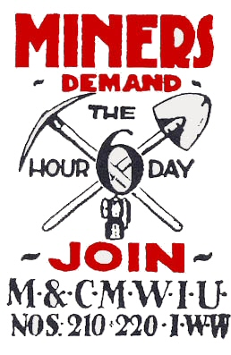

Submitted on Tue, 08/29/2006 - 4:26pm
 140 Tage im Streik
140 Tage im Streik
DIE BESCHÄFTIGTEN NEHMEN DIE PROTESTE MIT EINER DEMONSTRATION AM MITTWOCH DEN 9. AUGUST WIEDER AUF
Mitglieder des Ständigen Sekretariates der CNT gelangten mit dem Generaldirektor der Personalleitung und dem Direktor für Arbeitsangelegenheiten von Mercadona am Samstag, den 5. August in Madrid zu einer prinzipiellen Einigung. Diese sollte am 7. August in Sevilla unterschrieben werden, um so den Streik zu beenden. Jedoch machte Mercadona an diesem Tag einen "spektakuläre Wende", um sich die Entlassung für 300.000? aller Streikenden zu erkaufen.
Am 8. August hatten der Generalsekretär und der Sekretär für Gewerkschaftsaktion des Nationalkomitees der CNT, Rafael Corrales beziehungsweise Antonio Baena, im Hotel "AC Santa Justa" in Sevilla ein neues Treffen mit dem Generaldirektor der Personalleitung und dem Direktor für Arbeitsangelegenheiten von Mercadona (José Antonio Jiménez und Antonio Muñoz), um die am vorherigen Samstag im Hotel "NH Nacional" in Madrid erreichten Einigungen zu einem Ende zu bringen. Die Einigung sah eine akzetable Lösung für die seit dem 23. März sich im Streik befindenden Arbeiter des Logistikzentrums von Mercadona in Sant Sadurni D'Anoia (Barcelona) vor.
Submitted on Tue, 08/29/2006 - 4:21pm
140 days on strike.
THE EMPLOYEES RETURNED TO MAKE PROTESTS WITH A DEMONSTRATION ON WEDNESDAY, 9TH OF AUGUST.
Members of the Permanent Secretariat of CNT have made a type of preagrees with the Director of Human Resources and the Director of working relations of Mercadona on saturday, 5th of August in Madrid which was meant to be ratified on tuesday, 8th of August in Sevilla terminating the strike by this way. Nevertheless Mercadona made an "espectacular" turn on the same day trying to buy the dismissal of all workers for 300.000.
On 8th of August the general secretary and the secretary of union action of the National Comitee of CNT, Rafael Corrales and Antonio Baena, had a new meeting with the General Director of human resources and the Director of working relations of Mercadona, José Antonio Jiménez and Antonio Muñoz, in the Hotel "AC Santa Justa" in Sevilla in order to finalize the preaggrees achieved on saturday before in the Hotel "NH Nacional" in Madrid. The agree supposed - apart other progresses - an acceptable solution for the workers of the logistic centre of Mercadona in Sant Sadurni D'Anoia (Barcelona) on strike since the 23th of March.
Submitted on Tue, 08/29/2006 - 4:14pm
Mercadona ofrece al Secretariado Permanente de CNT cincuenta millones de las antiguas pesetas por el despido de todos los huelguistas Contenido
140 días en huelga
LOS EMPLEADOS RETOMAN LAS PROTESTAS EN BARCELONA CON UNA MANIFESTACIÓN EL MIÉRCOLES 9 DE AGOSTO
Miembros del Secretariado Permanente de CNT con el Director General de Recursos Humanos y el Director de Relaciones Laborales de Mercadona, llegaron el Sábado 5 a un principio de preacuerdo en Madrid para ratificarlo el martes 8 en Sevilla y terminar así la huelga. Sin embargo Mercadona dio el mismo martes un giro "espectacular" para comprar el despido de todos los huelguistas por 300.000 euros.
Submitted on Thu, 08/17/2006 - 7:48am
 Unterstützung für Call Center ArbeiterInnen in Melbourne. Rund 15 Leute folgten einem Aufruf der Kölner IWW und protestieren am Dienstag, den 15. August 2006 von 12.30 Uhr bis etwa 13.15 vor der Zentrale der Lufthansa AG an der Deutzer Brücke.
Unterstützung für Call Center ArbeiterInnen in Melbourne. Rund 15 Leute folgten einem Aufruf der Kölner IWW und protestieren am Dienstag, den 15. August 2006 von 12.30 Uhr bis etwa 13.15 vor der Zentrale der Lufthansa AG an der Deutzer Brücke. An die Beschäftigten des Flugunternehmens, die zu diesem Zeitpunkt in die Mittagspause gingen oder aus selbiger kamen, wurden über 200 Flugblätter verteilt. Auf Schildern stand "Lufthansa / Global Tele Sales - Stop cutting wages!" und "Gegen das weltweite Lohndumping - Globale Solidarität". Die Aktion wurde beendet, nachdem die Lufthansa die Polizei gerufen hatte, die mit zwei Streifen anrückte. Wir wollten ohnehin gerade aufbrechen.
Was sind die Hintergründe?
Die Lufthansa-Tochter "Global Tele Sales" (GTS) betreibt weltweit die Call-Center für die Lufthansa AG. In Melbourne versucht das Unternehmen nun, eine reale Lohnkürzung von 15% durchzusetzen. Sie macht sich dabei die neuen arbeiter- und gewerkschaftsfeindlichen Gesetze zu Nutze, die von einer rechten Regierung gegen massive Proteste durchgesetzt wurden.
GTS ignoriert neuerdings den Tarifvertrag mit der Dienstleistungsgewerkschaft "Australian Service Union" (ASU) und bietet den 80 Angestellten des Melbourner Call Centers Einzelverträge an, die zum einen eine zehnprozentige Lohnkürzung beinhalten, desweiteren deutliche Verschlechterungen in Sachen Überstunden. Die Gewerkschaft errechnet insgesamt 15 % Lohneinbußen.
Wieso unterstützen wir ausgerechnet australische ArbeiterInnen?
a) Die Zentrale der Lufthansa Commercial Holding sitzt nun mal in Köln. Es wird die KollegInnen in Melbourne sehr freuen, unsere Unterstützung zu erfahren. Das Kapital agiert global. Wir sollten endlich nachziehen.
b) Der Streik bei Gate Gourmet in Düsseldorf und London-Heathrow hat gezeigt, dass im Bereich des Flugverkehrs der Klassenkampf von oben verschärft wird. Was heute in australischen Call-Centern passiert, kann jederzeit auf Betriebe in Europa übertragen werden. Da die Lufthansa (Gewinn 2005: 577 Millionen Euro) bis 2008 den Gewinn verdoppeln will, dürften weltweit andere arbeitnehmerfeindliche Maßnahmen folgen.
c) Wir haben von den Vorgängen in Melbourne über das International Solidarty Committee der I.W.W. via e-mail erfahren. Die ASU bat um Unterstützung.
Es handelt sich um die erste Aktion der Kölner Wobblies (IWW). Wir sehen - neben dem Aufbau einer kämpferischen Gewerkschaft vor Ort - die Stärkung der globalen Solidarität unter ArbeiterInnen als eins unsere wichtigsten Ziele.
Submitted on Sun, 08/13/2006 - 6:11pm
Disclaimer - The following article is reposted here because it is an issue with some relevance to the IWW. The views of the author do not necessarily agree with those of the IWW and vice versa.
New America Media, News Analysis, David Bacon, Aug 09, 2006
Editor's Note: Business interests in Mexico are taking the election of Felipe Calderon as a green light to crack down on striking mine workers. David Bacon is an associate editor at New America Media and author of "The Children of NAFTA" (University of California Press, 2004).